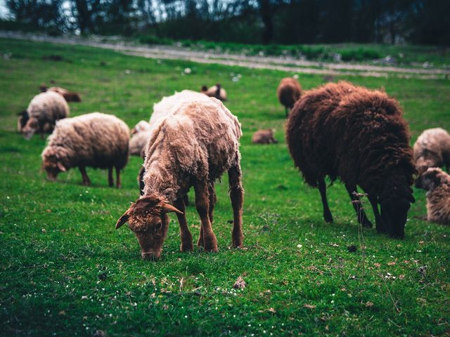
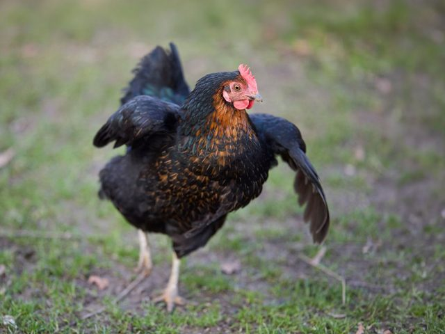
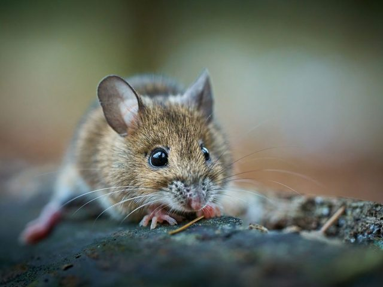
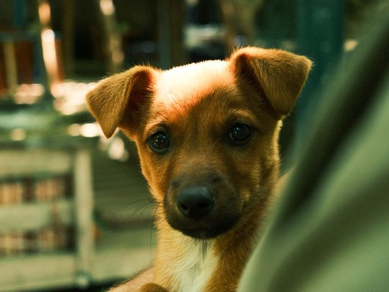
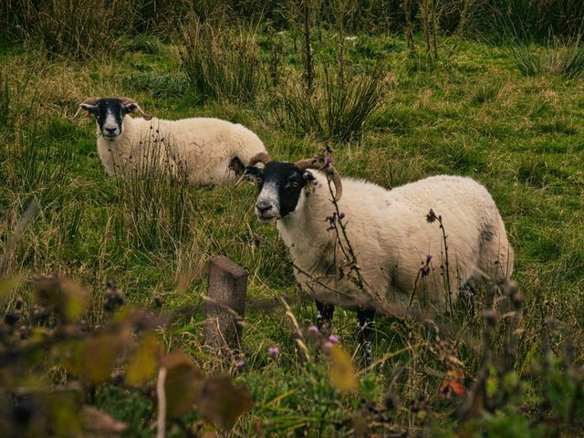
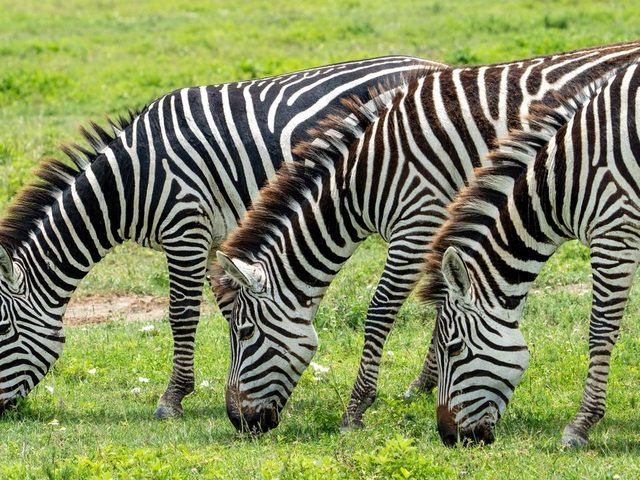
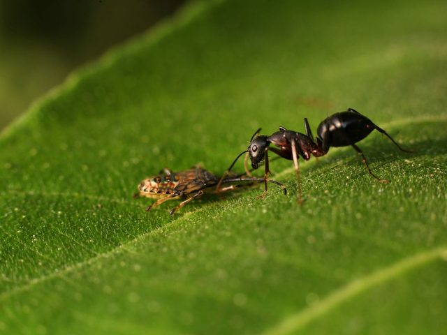
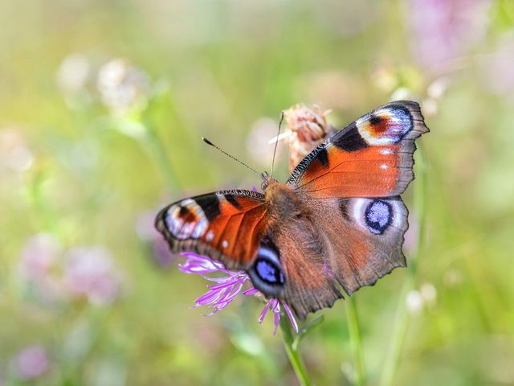
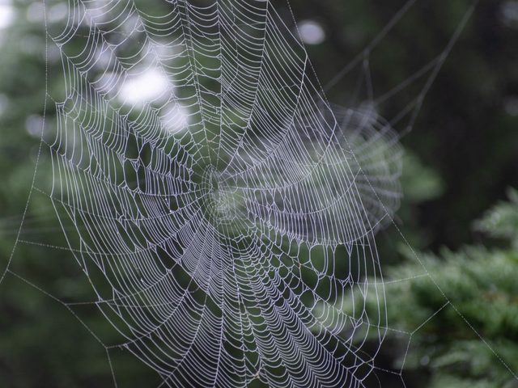
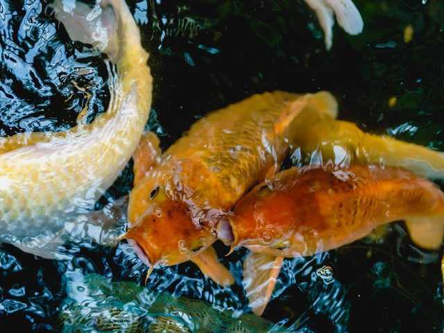

UNIT 26 · VOCABULARY
動物與昆蟲
Animals & insects
38 個單字聽・唸・用
本單元單字一覽
農場、森林、動物園裡的動物，還有小昆蟲，共 38 個字。注意特別的複數：mouse → mice、goose → geese、sheep、fish 單複數同形。
animalbearcatchickencowdogduckelephantfoxfroggoatgoosehenhorselionmonkeymousepetpigpuppyrabbitratsheeptigerzebrainsectantbatbeebirdbugbutterflysnakespiderfishturtlebitetail
每個字都有 🔊，先聽發音、跟著唸，再看例句。
單字 1–4

animal
動物n.
There are many animals on the farm.
農場上有很多動物。
農場上有很多動物。

bear
熊n.
The bear is looking for food in the forest.
那隻熊在森林裡找食物。
那隻熊在森林裡找食物。

cat
貓n.
My cat likes to sleep in the sun.
我的貓喜歡在陽光下睡覺。
我的貓喜歡在陽光下睡覺。

chicken
雞；雞肉n.
Grandma keeps some chickens in the yard.
奶奶在院子裡養了幾隻雞。
奶奶在院子裡養了幾隻雞。
單字 5–8

cow
母牛；乳牛n.
We get milk from cows.
我們從乳牛身上得到牛奶。
我們從乳牛身上得到牛奶。

dog
狗n.
Our dog barks when someone is at the door.
有人在門口時，我們的狗會叫。
有人在門口時，我們的狗會叫。

duck
鴨子；鴨肉n.
Some ducks are swimming in the pond.
有幾隻鴨子在池塘裡游泳。
有幾隻鴨子在池塘裡游泳。

elephant
大象n.
An elephant has a long nose.
大象有長長的鼻子。
大象有長長的鼻子。
單字 9–12

fox
狐狸n.
The fox runs very fast.
狐狸跑得很快。
狐狸跑得很快。

frog
青蛙n.
A frog is sitting on the leaf.
一隻青蛙坐在葉子上。
一隻青蛙坐在葉子上。
goat
山羊n.
The goats are eating grass on the hill.
山羊在小山上吃草。
山羊在小山上吃草。

goose
鵝；鵝肉n.
The goose is swimming on the lake.
那隻鵝在湖上游。
那隻鵝在湖上游。
單字 13–16

hen
母雞n.
The hen lays an egg every day.
那隻母雞每天下一顆蛋。
那隻母雞每天下一顆蛋。

horse
馬n.
Can you ride a horse?
你會騎馬嗎？
你會騎馬嗎？

lion
獅子n.
The lion is the king of animals.
獅子是萬獸之王。
獅子是萬獸之王。

monkey
猴子n.
The monkey is eating a banana.
猴子正在吃香蕉。
猴子正在吃香蕉。
單字 17–20

mouse
老鼠；（電腦）滑鼠n.
The cat is chasing a mouse.
貓正在追一隻老鼠。
貓正在追一隻老鼠。

pet
寵物n.
Do you have any pets at home?
你家裡有養寵物嗎？
你家裡有養寵物嗎？

pig
豬n.
The pigs are playing in the mud.
豬在泥巴裡玩。
豬在泥巴裡玩。

puppy
小狗n.
Our dog just had three puppies.
我們的狗剛生了三隻小狗。
我們的狗剛生了三隻小狗。
單字 21–24

rabbit
兔子n.
The rabbit has long ears.
兔子有長長的耳朵。
兔子有長長的耳朵。

rat
老鼠（比 mouse 大）n.
A rat is looking for food in the trash.
一隻老鼠在垃圾裡找食物。
一隻老鼠在垃圾裡找食物。

sheep
綿羊n.
There are many sheep on the farm.
農場上有很多綿羊。
農場上有很多綿羊。

tiger
老虎n.
The tiger is taking care of its baby.
老虎正在照顧牠的寶寶。
老虎正在照顧牠的寶寶。
單字 25–28

zebra
斑馬n.
Zebras have black and white stripes.
斑馬身上有黑白條紋。
斑馬身上有黑白條紋。

insect
昆蟲n.
An insect has six legs.
昆蟲有六隻腳。
昆蟲有六隻腳。

ant
螞蟻n.
The ants are carrying food home.
螞蟻正把食物搬回家。
螞蟻正把食物搬回家。

bat
蝙蝠；球棒n.
Bats sleep in the day and fly at night.
蝙蝠白天睡覺、晚上飛。
蝙蝠白天睡覺、晚上飛。
單字 29–32

bee
蜜蜂n.
A bee is flying from flower to flower.
一隻蜜蜂在花朵間飛來飛去。
一隻蜜蜂在花朵間飛來飛去。

bird
鳥n.
The bird is singing in the tree.
鳥在樹上唱歌。
鳥在樹上唱歌。

bug
小蟲n.
There is a bug on my arm!
我的手臂上有一隻小蟲！
我的手臂上有一隻小蟲！

butterfly
蝴蝶n.
The butterfly has beautiful wings.
這隻蝴蝶有美麗的翅膀。
這隻蝴蝶有美麗的翅膀。
單字 33–36

snake
蛇n.
Be careful! There is a snake in the grass.
小心！草裡有一條蛇。
小心！草裡有一條蛇。

spider
蜘蛛n.
The spider is making a web.
蜘蛛正在結網。
蜘蛛正在結網。

fish
魚；釣魚n./v.
There are many fish in the pond.
池塘裡有很多魚。
池塘裡有很多魚。

turtle
烏龜；海龜n.
The turtle moves very slowly.
烏龜移動得很慢。
烏龜移動得很慢。
單字 37–38

bite
咬；一口v./n.
Take a bite of this apple.
咬一口這顆蘋果。
咬一口這顆蘋果。

tail
尾巴n.
The dog is wagging its tail.
狗正在搖尾巴。
狗正在搖尾巴。
特別的複數
| 單數 | 複數 | 說明 |
|---|---|---|
| mouse | mice | 不規則變化 |
| goose | geese | oo → ee |
| sheep | sheep | 單複數同形 |
| fish | fish | 單複數同形（不同種類的魚才用 fishes） |
| fox | foxes | -x 加 -es |
| puppy／butterfly | puppies／butterflies | 子音＋y → ies |
| monkey | monkeys | 母音＋y → 直接加 s |
two mice、three geese、many sheep、a lot of fish。
動物和牠的叫聲、寶寶
| 動物 | 叫聲 | 寶寶 |
|---|---|---|
| dog 狗 | bark 汪汪叫 | puppy 小狗 |
| cat 貓 | meow 喵喵叫 | kitten 小貓 |
| cow 牛 | moo 哞哞叫 | calf 小牛 |
| duck 鴨 | quack 呱呱叫 | duckling 小鴨 |
| hen 母雞 | cluck 咯咯叫 | chick 小雞 |
chicken 可以是雞（可數）或雞肉（不可數）：I like chicken. 我喜歡吃雞肉。
和動物有關的常用說法
| 說法 | 意思 |
|---|---|
| busy as a bee | 非常忙碌 |
| eat like a bird | 吃得很少 |
| keep a pet | 養寵物 |
| take a bite | 咬一口 |
| wag its tail | 搖尾巴 |
bite 三態：bite／bit／bitten。The dog bit my leg. 狗咬了我的腳。
快問快答：中文 → 英文
1動物animal
2貓cat
3母牛；乳牛cow
4鴨子；鴨肉duck
5狐狸fox
6山羊goat
7母雞hen
8獅子lion
快問快答：英文 → 中文
1mouse老鼠；（電腦）滑鼠
2pig豬
3rabbit兔子
4sheep綿羊
5zebra斑馬
6ant螞蟻
7bee蜜蜂
8bug小蟲
學完了！接下來
複習方法
review
- 回到「📗 單字卡」，按「遮中文」自己考自己
- 再按「遮英文」，看中文說出英文
- 每個例句跟著 🔊 唸一次
準備好了
- 按右上角「📝 前往測驗」
- 測驗錯的題目要訂正到全對
- 訂正完成補送 1 點